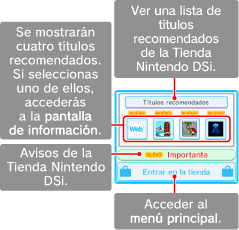
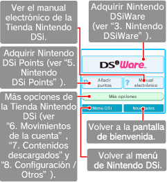

● Pantalla de bienvenida
Aquí verás títulos recomendados e información importante.

● Menú principal
Toca los botones de esta pantalla para adquirir programas exclusivos para Nintendo DSi (Nintendo DSiWare), añadir Nintendo DSi Points a tu cuenta o acceder a más opciones de la Tienda Nintendo DSi.
